手元の曲を、練習メニューの1kmペースで走りやすい速さに合わせて、音程を変えずに再生します。
スタート5分前から、目標タイムに合わせた1つのテンポでBGMを流し続けます。「本番の戦略」を入れると区間ごとにテンポを変えます。「使う」にチェックした曲を繰り返します。
ステージはなく、「使う」にチェックした曲を原曲の速さのまま、「ストップ」を押すまで繰り返し流します。
「使う」にチェックした曲だけを流します。マイリストには、チェックした曲が登録されます。曲ごとに流すステージも選べます（「全ステージ」か、個別のステージ）。BPMは自動で測り、ずれていたら試聴しながら「タップ」で直せます。
流す曲の組み合わせ（「使う」にチェックした曲とその順番、リズムの微調整）に名前を付けて登録します。登録されるのは曲だけで、大会の設定や練習メニューは入りません。練習・本番・リラックスのどれでも使えます。
合図音やお知らせ、クリック音、音量、リズムの微調整です。
寄付は任意です。寄付をしなくても、すべての機能を無料で使えます。
☕ このアプリを応援する（PayPal）ご意見・ご要望：marathonbgm@mbr.nifty.com
可能な範囲内で機能改善に取り組んでいます。
メールの返信は原則行っていません。
版 2026-11-10o
体重を入れると、練習の終了時と本番のゴール時に消費カロリー（目安）を表示し、本番のログにも書き出します。空にすると計算しません。
目安の計算：体重（kg）× 走った距離（km）。心拍数・年齢・坂道などは入らないので、実際とは1〜2割ずれることがあります。体重はこのブラウザの中だけに保存し、この画面以外には表示しません。
マラソンBGMは、スマホの中の自分の曲を、走るペースに合った速さで流すアプリです。音の高さは変わらず、登録もお金も要りません。このガイドは「準備 → 練習 → 本番 → リラックス」の順に並んでいるので、やりたいところから読んでください。
モードは3つです。画面の一番上のボタンで切り替えます。その右の「4. 実績」では、過去の本番の記録を見られます（詳しくは「8. 記録（ログ）とグラフ・実績」）。保存先をDropboxにすると、スマホで走った記録をパソコンでも見られます（「8.」の「スマホの記録をパソコンで見る」）。
| モード | 使うとき | 曲の速さ |
|---|---|---|
| 1. 練習 | ふだんの練習 | 練習メニューのペースに合わせる |
| 2. 本番 | マラソン大会の当日 | 目標タイム（戦略）のペースに合わせる |
| 3. リラックス | 走らないとき | 元の速さのまま |
| 4. 実績 | 過去の本番の記録を見るとき | 曲は流しません |
保存できるものは3種類で、それぞれ別々に保存します。一つを読み込んでも、ほかの2つは変わりません。
| 保存するもの | 保存する場所 | 使えるモード | 目印 |
|---|---|---|---|
| 曲（流す曲・順番） | 「🎵 曲の登録（マイリスト）」 | 練習・本番・リラックス | 紫の枠 |
| 練習メニュー | 「練習メニューの保存」 | 練習だけ | 「メニュー」タブの下 |
| 大会の情報と戦略 | 「本番レース情報・戦略を保存」 | 本番だけ | 「大会」タブの下 |
曲の登録（マイリスト）・練習メニュー・本番レース情報の3つとも、今読み込んでいるものが黄色の行になり、「読み込み中」と出ます。「上書き」が押せるのは、その黄色の行だけです（ほかを上書きしたいときは、先にそれを「読み込む」）。どれも「上書き」を押すと、「前 → 後」で何が変わるかが出る確認が出ます。よければ「OK」、やめるときは「キャンセル」を押します。入れた曲や設定はそのスマホの中だけに残り、どこにも送られません。
画面の右上の「カロリー計算」を押して体重（kg）を入れ、「閉じる」を押すと、ボタンの下が「計算する」に変わります。練習が終わったときと本番のゴール時に「消費カロリー（目安） 約○○ kcal」と表示し、本番のログとCSVにも書き出します。走っている途中は表示しません。計算は「体重 × 走った距離」の目安です。体重を空にすると「計算しない」に戻ります。体重は「カロリー計算」の画面でしか表示しません。
| 使える曲 | 使えない曲 |
|---|---|
| MP3、M4A（AAC）、FLAC、WAV などファイルとして持っている曲、CDから取り込んだ曲 | Apple Music・Spotify・Amazon Musicなどのアプリで「ダウンロード」した曲、コピー制限付きの曲（.m4pなど） |
曲がなくても、「曲」タブの一番上の「流す音」で「ドラム」か「無音」を選べば使えます。
屋外の練習と本番では、次の順に準備すると、音楽・音声のお知らせ・GPSの記録が途切れにくくなります。
| 機内モードのままできること | ネットにつないでからできること |
|---|---|
| 曲・ドラムの再生、音声のお知らせ（1 km毎など）、GPSで距離・ラップ・高低差の記録、画面ロック、消費カロリー | 天気の取得、練習の場所名、Dropboxへの保存、地図の表示、新しい版の確認 |
大会の前に、練習で一度「機内モード ON」のまま走り、GPS・音楽・1 km毎のお知らせが動くことを確かめておくと安心です。
機内モードでも開き直せます：一度ネットにつないでマラソンBGMを開くと、アプリ本体と使い方の画像をスマホの中に保存します。そのあとは、機内モードの間にブラウザのタブを閉じてしまったり、スマホがブラウザを終了させたりしても、アイコンから開き直せます。走っている途中なら、続きから再開します。ネットにつながっているときは、開くたびに新しい版を確かめて入れ替えます。
いまネットにつながっているかを見る：画面の上の「ネット接続あり」「ネット接続なし（オフライン）」で、今の状態がわかります。押すと、ネットがなくても使える機能と、ネットが必要な機能の一覧が開きます。オフラインのときは、地図・天気・場所の名前・Dropboxへの保存などに「接続されていないので現在は利用できません」と出ます。保存や天気はネットにつながると自動で行うので、そのままで大丈夫です。
画面は上から「モードのボタン」「走るときの表示（タイマーとスタート）」「設定のタブ」の順です。右上の「🌐」で、日本語・英語・中国語・韓国語に切り替えられます。日本語以外を選ぶと、この使い方ガイドは英語版になります。
km版とマイル版：距離をマイルで扱う「マラソンBGM（マイル）」もあります（https://shinichiokabe.github.io/marathon-bgm-mile/）。画面の上の「Mile version（マイル版）はこちら」を押すとマイル版に、マイル版では「Kilometer version（km版）はこちら」でkm版に移ります。曲・マイリスト・体重などの設定は共通で、記録や大会の設定は別々に保存します。走っている間は切り替えられません。
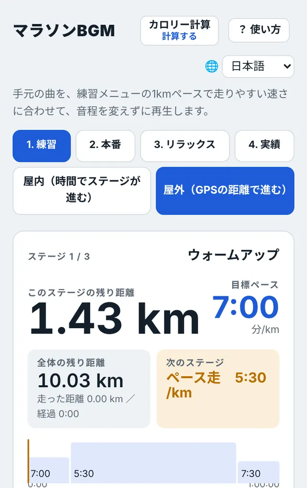
| モード | 設定のタブ |
|---|---|
| 練習 | メニュー ／ 曲 ／ 音・合図 |
| 本番 | 大会 ／ 戦略・記録 ／ 曲 ／ 音・合図 |
| リラックス | タブなし（リラックスと曲を1つの画面に。ドラム・無音・音・合図はありません） |
画面ロック：スタートすると画面が自動でロックされ、ポケットの中でボタンが勝手に押されなくなります。使えるボタン（ペースアップ／ダウン、距離の確定・取消、ゴール、解除）は画面下のバーに並び、長押しで動きます。押し続けると色が左から満たされ、いっぱいになると実行されます。
屋内の練習のロック：屋内の練習では、スマホを台に置いて走ることが多いので、ロック中のボタンは「ペースダウン」「ペースアップ」「一時停止／終了」の3つだけで、どれも1回押すだけで動きます。「一時停止／終了」を押すとタイマーと曲が止まり、下に大きな「再開する」、画面の上に「終了」が出ます。タオルなどが触れても一時停止になるだけなので、「再開する」を押せば続きから走れます。練習をやめるときは、上の「終了」を押します。メニューを最後まで終えると、ロックは自動で外れます。
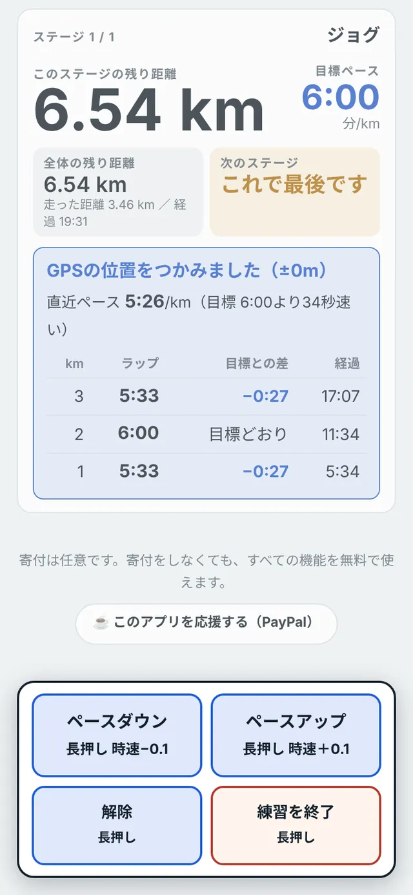
ページの一番下には「版 2026-11-10o」のような版の表示があります。新しい版になったかを確かめるときに見ます。新しい版が出ると、画面の上に「新しい版があります」と出るので、「新しい版にする」を押します。
練習を終了したときや本番でゴールしたときは、画面がそのまま残り、「おつかれさまでした」の欄に記録の保存の状況が出ます。
ネットにつながっていないと「📶 インターネットにつながっていません」と出ます。機内モードをOFFにし、Wi‑Fiかモバイル通信をONにしてください。すべて済むと「閉じる」が出るので、押して画面を終えます。その場でつなげないときは「今は閉じる（あとで自動で保存）」で終えても記録は消えず、あとでネットにつながった状態でアプリを開くと自動で取得・保存します。
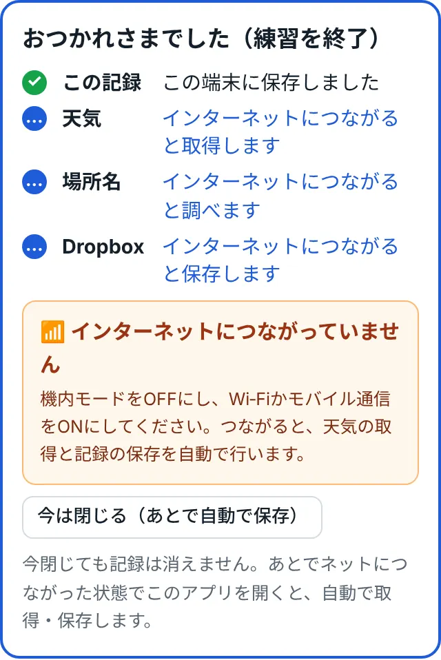
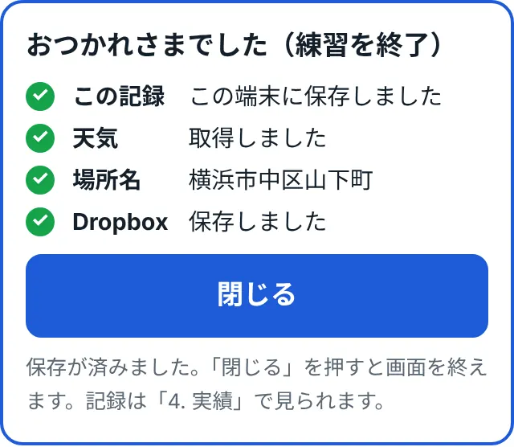
本番は、ゴールしたときも途中でやめたときも同じ「ゴール」ボタンで終えるため、「おつかれさまでした」の欄の一番上で「ゴールした」か「途中でやめた（リタイア）」を選びます。推定の距離がゴールまで1 km以内なら「ゴールした」、それより手前なら「途中でやめた」が青く目立って表示されます。選ぶまでは「閉じる」が出ません。「閉じる」を押すまでは選び直せます。
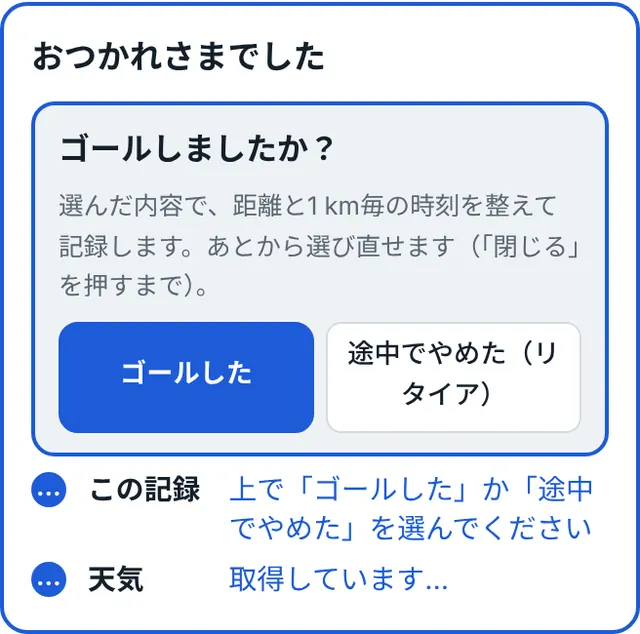
練習メニューのステージごとに、そのペースで走りやすいテンポで曲を流します。
時間を決めずに走る：「練習メニュー」の「時間を決めずに走る（「終了」を押すまで・最長4時間）」にチェックを入れ、ペース（1 km何分）を入れます。数字だけで入れられます（例：630 → 6:30）。テンポはそのペースで一定です。走っている間は経過時間と距離（屋内は経過時間とペースからの推定、屋外はGPSの距離）を表示し、10分ごとに「10分たちました。推定1.4キロです。」のように声で知らせます。終えるときは「終了」を押します（屋内は「一時停止／終了」→「終了」、屋外は「練習を終了」を長押し）。4時間たつと自動で終了します。それより長く走るときは、もう一度スタートしてください。
| 屋内 | 屋外（GPS） | |
|---|---|---|
| ステージが進むとき | 決めた時間がたったとき | 決めた距離を走ったとき |
| 1 km毎のお知らせとラップ表 | なし | あり |
屋外では、「GPSの位置をつかみました。」と出てからスタートしてください。走っている途中の「ペースアップ／ダウン」は、時速を0.1 kmずつ変えてテンポを合わせます。「練習の内容をクリア」はメニューだけを空にします（2回押す）。
途中でやめるとき（一時停止と練習を終了）：「一時停止」はタイマーを止めるだけで、もう一度押すと続きから走れます。練習を途中で終えるときは「練習を終了」を押し、「もう一度押すと終了」と出たらもう一度押します。画面ロック中は、屋外の練習では下のバーの「練習を終了」を長押しします。屋内の練習では「一時停止／終了」を押してから、画面の上の「終了」を押します。終了すると、そこまでの距離で消費カロリーを出し、屋外なら「この練習を記録に残しますか？」と聞かれます。そのあと「おつかれさまでした」の欄で保存が済んだら、「閉じる」を押して終えます。
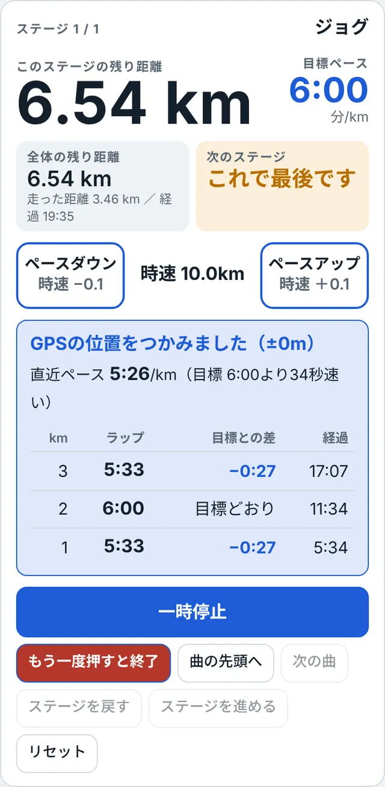
曲の順番とシャッフル：練習には「曲をシャッフルして流す」はありません。練習では、曲ごとに流すステージ（「全ステージ」か、個別のステージ）を選べて、ステージが変わるとそのステージ用の曲を、「曲」タブで▲▼で並べた順に流すためです。流す順番を変えたいときは、▲▼で並べ替えてください。シャッフルは、本番（「曲」タブの「曲を追加」の下）とリラックスで使えます。
「メニュー」タブの「自動生成」を押すと、目標の大会に向けた本日の練習メニューを作れます。
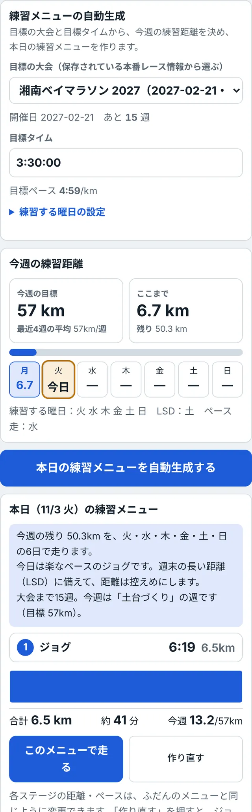
週の目標距離は、「走行距離」の記録の最近4週の平均から始め、週に最大10%ずつ増やします。4週に1回は距離を落とす回復週、大会前の3週は距離を減らす調整期間です。いちばん多い週の距離は目標タイムで決まります。今日の距離は、今週の残り距離を残りの練習日で分けて決めます（LSDの日は多め、ペース走の日はやや多め）。ペースは、ジョグとLSDが目標ペースより1分10〜20秒ほど遅く、ペース走は目標ペース（距離を増やしている時期は＋10秒）です。
休みの曜日に走ったとき：「練習する曜日」は、自動生成がメニューを作る曜日の設定です。休みの曜日に走っても記録はそのまま今週の距離に数え、曜日の欄には走った距離が出ます。その分だけ残りの距離が減り、残りの練習日のメニューが軽くなります。走らなかった休みの曜日には「休」と出ます。
自動生成のメニューは、一般的な練習の考え方に沿った目安です。体調や脚の状態に合わせて、ステージの距離やペースを変えて使ってください。
「屋外（GPSの距離で進む）」で走った練習は、終わったときに「この練習を記録に残しますか？」と聞かれます。メニューを最後まで走って終わったときと、途中で「練習を終了」（または「リセット」）を押して終えたときの両方です（200 m未満のときは聞きません）。
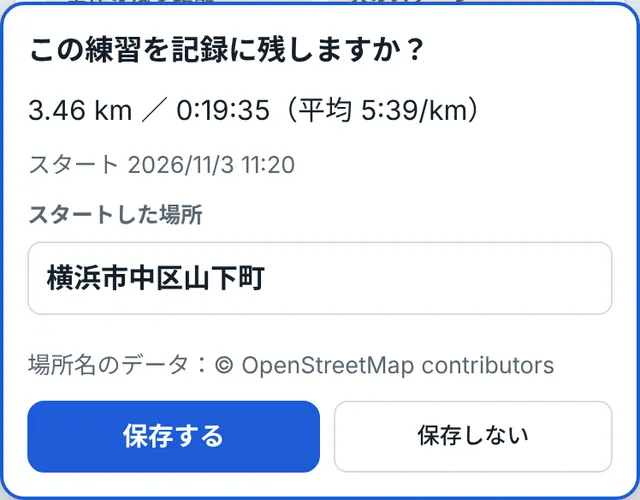
練習の記録でも、本番と同じように1 km毎のラップ、ペースのグラフ、高低差、天気、地図（「地図を表示」を押したとき）を見られます。同じ場所の前の練習と比べることもできます。屋内の練習は距離を測らないため、記録には残りません。
下の「CSVの形式」で書いたCSVファイルがあれば、その日の練習メニューを自動で表示できます。場所は「メニュー」タブの「＋ ステージを追加」の下の「練習メニュー・CSVを読み込む」です。
一覧に出るのは今日以降の日です。休養日など走らない日には「（走る練習なし）」と付きます。一度読み込んだCSVはスマホに残るので、次の日は日付を選ぶだけです。走っている間は読み込めません。
| 列 | 書くこと | 例 |
|---|---|---|
| 1列目 | menu | menu |
| 2列目 | 日付（年-月-日） | 2026-11-03 |
| 3列目 | 一覧に出す内容 | ペース走 |
| 4〜7列目 | 使いません（空でよい） | |
| 8列目 | 練習メニューのコード。空なら「走る練習なし」 | tm.W420x100_P330x400_C450x100 |
練習メニューのコードは、「tm.」のあとにステージを「_」でつないで書きます。1つのステージは「種類の記号」「ペース」「x」「時間」を続けて書きます。
| 記号 | 種類 |
|---|---|
| W | ウォームアップ |
| J | ジョグ |
| P | ペース走 |
| M | 目標ペース |
| I | インターバル |
| R | つなぎジョグ |
| B | ビルドアップ |
| L | ロング走 |
| C | クールダウン |
例の「tm.W420x100_P330x400_C450x100」は、「ウォームアップ 7:00/kmで10分 → ペース走 5:30/kmで40分 → クールダウン 7:30/kmで10分」です。ファイル全体の例は次のとおりです。
marathon-bgm-bulk,v1
種類,日付,内容,,,,,コード
menu,2026-11-03,ペース走,,,,,tm.W420x100_P330x400_C450x100
menu,2026-11-04,休養,,,,,
menu,2026-11-05,ジョグ,,,,,tm.J450x600大会当日は「待機 → スタート → ゴール」の3回ボタンを押すだけです。その前に、大会の情報を入れておきます。
| 項目 | 入れるもの | 例 |
|---|---|---|
| 大会名・種目 | フル／ハーフ／その他（距離を入力） | 水戸黄門漫遊マラソン、フル |
| 開催日・スタート時刻 | 号砲の時刻 | 2026/11/1、9:00 |
| ウェーブの遅れ | 先頭ウェーブのスタートから、自分が並ぶブロックのウェーブがスタートするまでの分数（ウェーブがない大会は0） | 10 |
| 制限時間 | 時:分。ウェーブスタートの大会は、大会の制限時間に「先頭ウェーブから最終ウェーブがスタートするまでの時間差」を足して入れる | 6:00＋20分→6:20 |
| 目標タイム | 時:分:秒 | 4:30:00 |
| 関門 | 1行に1か所「距離km 閉鎖時刻」 | 10 10:40 |
| 給水所・エイド | 1行に1か所「距離km 内容」 | 15 水 バナナ |
| 折り返し地点（任意） | 1行に1か所「距離km 名前」。通過時刻を記録に残します | 10.5 第1折り返し |
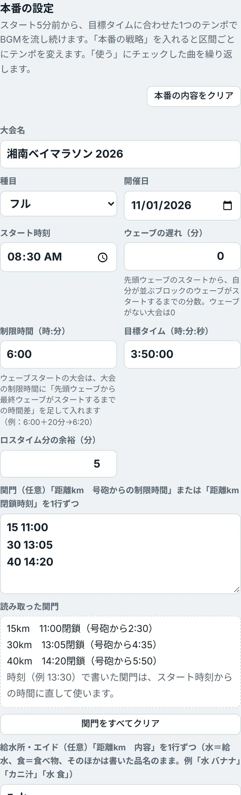
給水所の「内容」は、「水」は給水、「食」は食べ物、それ以外は書いた品名のままです。入力欄の下の「読み取った…」で、正しく読めたか確かめられます。別の大会に切り替えるときは、「本番レース情報・戦略を保存」の「読み込む」を押します。
目標タイム・制限時間・ペース・公式記録などの時間は、数字だけ続けて入れれば「:」は自動で入ります。スマホの数字キーのままで入れられます。
| 欄 | 入れる数字 | なる形 |
|---|---|---|
| 目標タイム・公式記録（時:分:秒） | 40110 33000 5000 | 4:01:10 3:30:00 0:50:00（4けたは分:秒） |
| 制限時間（時:分） | 600 1330 | 6:00 13:30 |
| 1kmのペース（分:秒） | 530 | 5:30 |
| 関門（1行ずつ） | 10 140 30 1330 | 10 kmを号砲から1:40 30 kmが13:30に閉鎖 |
開催日とスタート時刻は、スマホのカレンダーと時計の画面から選びます。
画面上部の「🎒 持ち物チェックリスト」で、大会の持ち物を確かめる画面が開きます（本番の待機中と走っている間は開けません）。
「← 戻る」で直前の画面に戻ります。同じ持ち物が2つの対策にあるときは、一覧には1回だけ出ます。
| 表示 | 意味 |
|---|---|
| スタートから | 自分がスタートを押してからの時間 |
| 制限時間まで | 号砲からの制限時間の残り |
| 推定の現在地 | GPS・1 km通過・目標ペースから計算した今の距離 |
| 次の関門・次の給水 | そこまでの距離、閉鎖までの時間や内容 |
| 30分後の目標距離 | 戦略どおりなら30分後にいるはずの距離 |
ネットタイムとグロスタイム：走っている間の大きなタイマーは、自分が「スタート」を押してからの時間（ネットタイム）です。ゴールすると、グロスタイムも表示します。グロスタイムは「スタート時刻＋ウェーブの遅れ」（自分のウェーブのスタート）からゴールまでの時間で、ネットタイムは、自分がスタートラインを通過してからゴールまでの時間です。本番では、走っている間に曲を一時停止しても時計は止まりません。グロスタイムはログとCSVにも残ります。
距離の確定：走っている間は「＜ 推定 10.15 km 確定 ＞ 取消」のボタンが出ます。真ん中のボタンには今の推定の距離だけが出ます。確定すると、推定を超えない一番先の看板（推定が10.15 kmなら10km）に合わせます（看板は1km毎。中間点と、ゴールまで1km未満の看板は使いません）。
確定したことの確かめ方：確定を押すと、声で「21キロ、確定しました」と言い、画面全体が緑色に光って「21 km 確定しました」と出ます。取消を押したときはオレンジ色で「確定を取り消しました」と出ます。左右の矢印で看板を変えたときも、選んだ看板の距離を声で言います。
2回タップで確定する：画面ロック中に、下のボタン以外の場所を2回続けてタップすると、「推定16.1キロ。16キロの看板で確定できます」と読み上げます。もう一度2回タップすると「16キロで確定しますか？」と聞くので、さらに2回タップすると確定します（確定する時刻は、1回目にタップした時刻です）。15秒タップしなければ取りやめます。声の聞き取りは使わないので、ネットがなくても使えます。看板が違うときは、下のバーの矢印で選んでから2回タップします。
2回タップでゴールする：確定に使う看板は1km毎で、ゴールまで1km未満の看板と中間点は使いません。推定の距離がゴールまで1km未満のとき、または最後の看板（ゴールまで1km以上ある一番先の看板）を確定したあとに2回タップすると、「ゴールで終了できます」と読み上げます。同じようにもう一度2回タップで「ゴールしますか？」、さらに2回タップでゴール（終了）します。ゴールの時刻は、1回目にタップした時刻です。ゴールラインを越えたらすぐに2回タップしてください。
現在地は戻りません：GPSなどで一度進んだ距離より、推定の現在地が戻ることはありません（自分で看板を確定し直したときだけ変わります）。スマホを開き直したときも、それまでに進んだ距離から続けます。
ゴール（終了）を間違えて押したとき：終了の画面に出る「ゴール（終了）を取り消して走り続ける」を押すと、終了する前の状態に戻って走行を続けます（終了から20分以内。時間はそのまま進んでいます）。
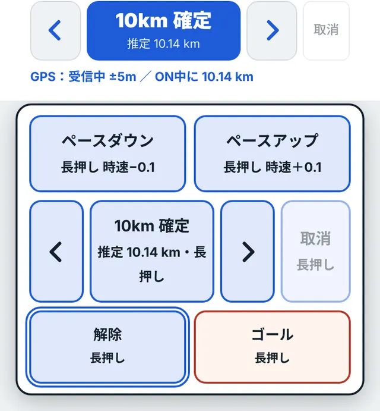
距離の看板を通ったときに「距離の確定」で合わせると、現在地を正しく直せます。ここで合わせておくと、ゴールしたあとの1 km毎の時刻もより正確になります（「8. 記録（ログ）とグラフ・実績」の「距離と時間の調整（時間配分）」）。5 km地点からは1 km毎に、目標より10分以上遅れていないかを直近5 kmで判定し、遅れていれば直近5 kmのペースに合わせて戦略を自動で調整します（制限時間を超えそうなときは完走できる速さに）。一度調整したあとは、速さが時速0.3 km以上変わるときか、完走優先に切り替えるときだけ調整し直します。
「使う」にチェックした曲を、元の速さのまま「ストップ」を押すまで繰り返し流します。ストレッチやクールダウンのときに使えます。
「曲」タブの一番上の「流す音」で、曲・ドラム・無音を選べます。ドラムと無音では曲を使わないので、曲の一覧（曲を追加）、紫の枠「🎵 曲の登録（マイリスト）」、「曲の先頭へ」「次の曲」のボタンは表示されません。合図音、音量、リズムの微調整（曲がゆっくりに感じたら「早く」）は「音・合図」タブで変えられます。
| 流す音 | 流れる音 |
|---|---|
| 曲を流す | 「使う」にチェックした曲を、ペースに合わせた速さで |
| ドラム | 曲の代わりに、ペースに合った歩数（例：171歩/分）でドラム |
| 無音 | 音楽なし。合図音と音声のお知らせだけ |
音声のお知らせを読み上げている間は、曲やドラムの音量を自動で大きく下げ、読み終わると元に戻します。「音・合図」タブの「音声案内の音量」で、5段階に調整できます（真ん中の「標準」がこれまでの大きさ）。案内の声はスマホのメディアの音量より大きくはできないため、「やや大きい」「大きい」では案内のあいだ曲をさらに下げ（「大きい」は止め）、少しゆっくり読みます。「試しに聞く」で確かめられます。それでも小さいときは、スマホの音量を上げてください。案内が重なるときは、1 km毎のラップ案内を先に読み、中間点・30分毎・給水所・折り返しの手前の案内は、そのあとに読みます。本番では、次のようなときに音声で知らせます。1 km毎のお知らせは「音・合図」タブで外せます。「1km毎にバイブレーション」にチェックを入れると、1 km毎に1回ブルッと震えます（本番と練習の屋外。Androidのみ。iPhoneは非対応）。1 km毎に画面に出るラップの表示には、直近1 kmのペースをそのまま続けたときのゴール予想（ネットタイムとゴールの時刻）も出ます。制限時間に間に合わない予想のときは、そのことも表示します。
| いつ | 言うことの例 |
|---|---|
| スタート5分前・スタート時刻 | 「スタート5分前です」「スタート時刻です」 |
| 1 km毎 | 「17キロ。ラップ6分12秒。」（画面にも大きく表示） |
| 30分ごと | 「60分経過。戦略では9.8キロ地点です」 |
| 給水所の300 m手前 | 「まもなく給水所です。水、バナナがあります」 |
| 戦略を自動で調整したとき | 「直近5キロのペースに合わせて…」 |
本番では、スタート時刻と1 km毎の通過時間を自動で記録します。中間点（大会の距離の半分）と、「大会」タブに入れた折り返し地点の通過時刻も記録します。見る場所は、画面の一番上の「4. 実績」です（「本番」の「戦略・記録」タブの「「4. 実績」を開く」からも開けます）。
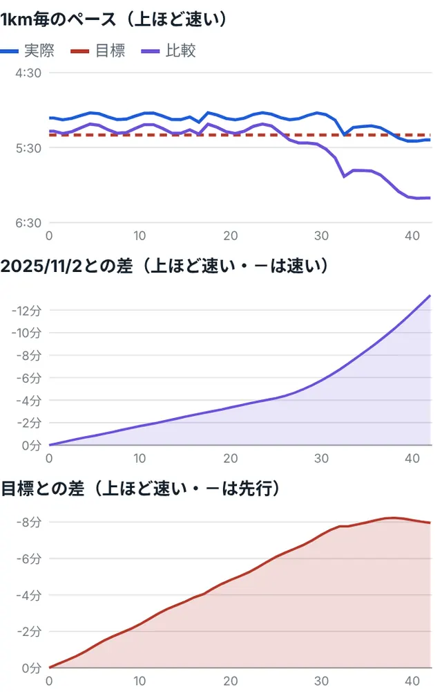
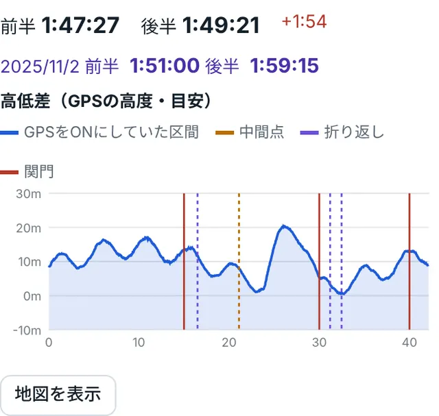
天気は、ゴールしたあと、このアプリを開いた状態でネットにつながったときに、気象データ（Open-Meteo）から自動で取得します。スタート前かレース中に一度もGPSをONにしなかったときは、走った場所がわからないため取得できません。
「大会」タブに折り返しの距離を入れたときだけ、その1 km手前と500 m手前で「あと1キロで第1折り返しです」「あと500メートルで第1折り返しです」と音声で知らせます。大会の案内にある折り返しの距離は正確でないことが多いため、案内に使うだけで、推定の現在地や1 km毎の時刻の補正には使いません（補正は「距離の確定」とゴールで行います）。
折り返し点は、「大会」タブに入れた距離に達した時刻で記録します。トイレやエイドステーション（給水所）に立ち寄ってコースを外れた分も走った距離に数えるため、実際の折り返し点より手前で記録されることがあります。また、距離の入力を誤った場合も、実際とは違う地点が記録されます。
ゴールしたあと、GPSをONにしていた区間では、進む向きが反対になった地点（折り返し）をGPSの記録から探し、次のように表示します。
| 表示 | 意味 | 削除 |
|---|---|---|
| 折り返しの名前＋「GPSで確認」 | 登録した折り返しの近く（0.5 km以内）で、GPSでも折り返しを確認できた | できません |
| 折り返しの名前だけ | 登録した折り返しだが、GPSでは確認できなかった（GPSがOFFだった、登録の距離が違う など） | できます |
| 折り返し（GPS検出） | 登録していない地点で、GPSが折り返しを検出した（トイレやエイドへの往復、道を間違えて引き返した など） | できます |
実際の折り返し点ではない行は、表の「削除」を押し、「もう一度押すと削除」と出たらもう一度押して消してください。
関門まであと何km・必要ペース・余裕は、「距離の確定」で分かったGPSのずれの割合で直した距離で計算します（「距離と時間の調整（時間配分）」）。最終関門を通過すると、「最終関門を通過しました。制限時間まで、あと○分です。ゴールまであと○キロ、1キロ○分○秒より速ければ間に合います。」と音声で知らせます。「大会」タブに関門を入れておくと、各関門を通過した時刻を記録し、表の関門の行に「閉鎖」の時刻と「余裕」（閉鎖まで何分前に通過したか）を表示します。余裕が10分未満なら黄色、閉鎖後の通過なら赤で表示します。上の行には制限時間と、ゴールしたときの制限時間までの余裕も出ます。閉鎖の時刻は開催日とスタート時刻（号砲）から計算するので、両方を入れておいてください。入れていないときは、自分がスタートを押した時刻から計算した目安になります。前回の大会と比べるときは、「比較のラップ」の欄に前回の関門の余裕が出ます。
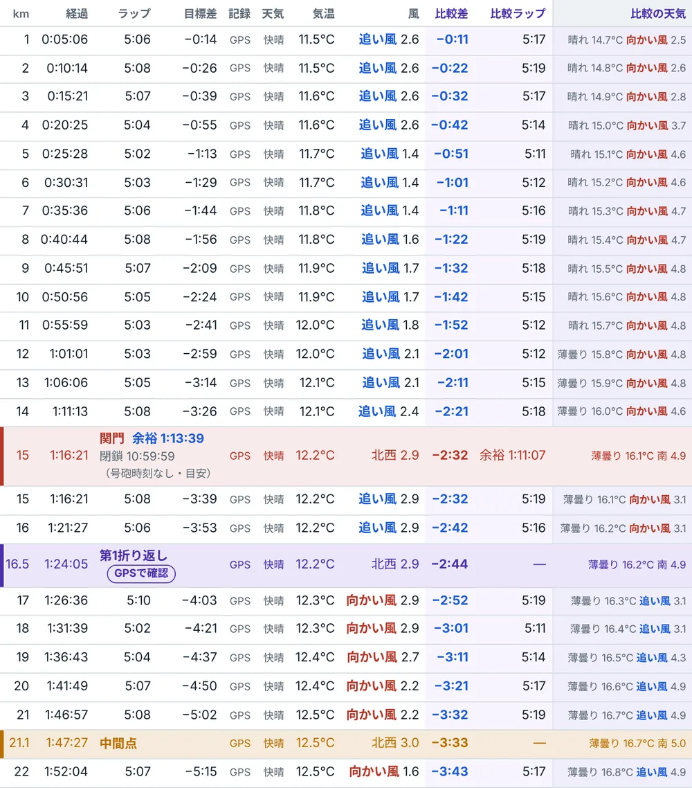
GPSで測る距離は、実際のコースの距離とずれます。コースの内側（最短の線）を走れなかった分や、建物・木による電波のぶれで長めに出ることが多く、トンネルや高いビルの間で電波が切れると短めに出ることもあります。フルマラソンでは数百m〜1 kmほどずれることがあります。そのため、本番では次のように調整しています。
こまめに「距離の確定」で合わせるほど、1 km毎のラップは実際に近くなります。すべての看板で押す必要はなく、5 kmごとなど気づいたときだけでも効果があります。
「折り返し点の表示」「関門地点の表示」「中間地点の表示」のチェックを入れた地点だけを、表・高低差・地図に表示します。チェックを外しても記録は消えず、CSVにはすべて書き出します。練習の記録には関門と中間点がないため、「練習」を表示しているときは「折り返し点の表示」だけが出ます（往復のコースでは、GPSで見つけた折り返しを表示します）。
画面の一番上の「4. 実績」を押すと、ほかの表示が隠れて、過去の記録だけになります。上の「本番」「練習」で、見る記録の種類を切り替えます。一覧から大会を選ぶと、上と同じグラフ・前半後半・高低差・表を見られます。地図は最初は出ず、「地図を表示」を押したときだけ出ます。「1. 練習」「2. 本番」「3. リラックス」を押すと元の画面に戻ります。本番の待機中や走っている間は「4. 実績」は押せません。
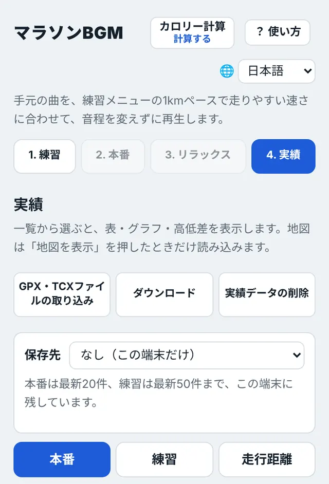
「本番」を選ぶと、いちばん上に「出走した大会の一覧」が出ます。日付・大会名・写真URL・種目（フル／ハーフ／その他（距離））・状況（完走／リタイア）・ネットタイム・1km平均を1行ずつ並べます。行を押すと、その大会が下の「本番のログ」に出ます。Dropboxにだけ残っている大会には「☁」が付き、押すと読み込みます。
写真URLは、大会の写真を置いた場所（オールスポーツなどの写真サービスや、Googleフォトの共有リンク）を残しておく欄です。大会を選ぶと「本番のログ」に「写真URL」の欄が出るので、URLを貼って「保存」を押します。一覧の「開く」から、その写真のページを開けます。
「4. 実績」の上の3つのボタンのすぐ下にある「保存先」で、記録をどこに残すかを選べます。
| 保存先 | このスマホに残る記録 | 向いている人 |
|---|---|---|
| なし（この端末だけ） | 本番は最新20件、練習は最新50件。それを超えると古いものから消えます | このスマホだけで見られればよい人 |
| Dropbox | 本番・練習それぞれ直近5件。全部の記録はDropboxに残ります | 記録をずっと残したい人、パソコンでも見たい人 |
「なし」のままだと、スマホを変えたり、ブラウザのデータを消したりすると記録も消えます。大事な記録は「実績」のいちばん上の「ダウンロード」でCSVかGPXにしておくか、次のDropboxに保存してください。
「4. 実績」のいちばん上の「ダウンロード」を押して開き、記録を選んで、「CSVをダウンロード」（1 km毎の表）か「GPXをダウンロード」（走った道すじ）を押します。本番・練習のどちらでも、Dropboxにしかない「☁」の記録でも選べます。GPXはStravaやGarmin Connectにアップロードしたり、ほかの地図アプリで見たりできます。走った道すじ・高度・各地点の時刻が入ります（位置は約25 mごと）。GPSをOFFにして走った本番など、位置の記録がない記録は書き出せません。
StravaやGarmin Connectなどで記録した走りも、ファイル（GPX・TCX）に書き出せば「4. 実績」に取り込めます。時計で走った過去の大会も、マラソンBGMで走った記録と同じようにグラフ・高低差・地図・天気・前回との比較で見られます。
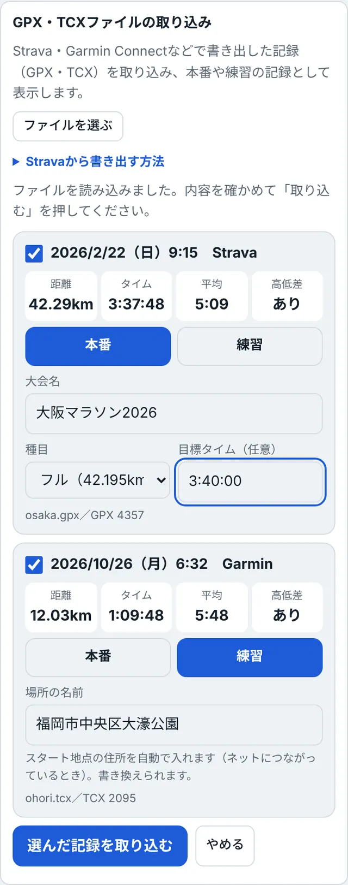
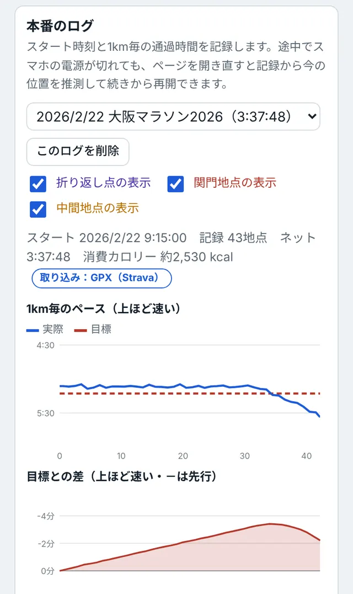
「4. 実績」の「走行距離」で、走った距離の記録と月ごとの合計を見られます。
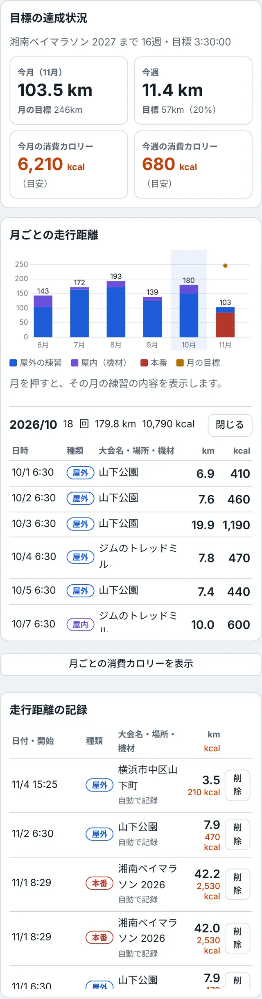
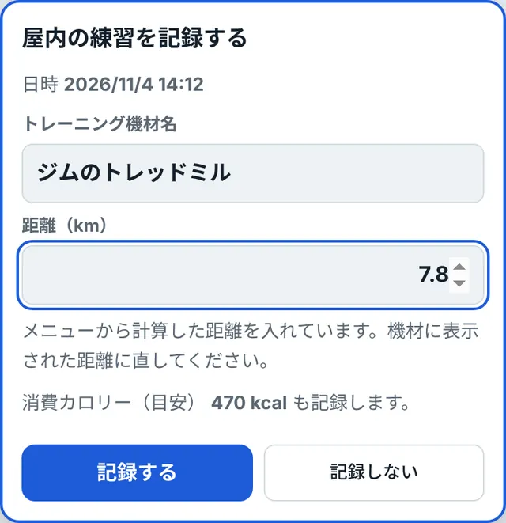
保存先がDropboxのときは、走行距離の記録もDropboxに保存し、スマホとパソコンで同じ記録を見られます。
「4. 実績」のいちばん上の「実績データの削除」を押して開き、表示中の種類（本番か練習）の記録をまとめて削除できます。
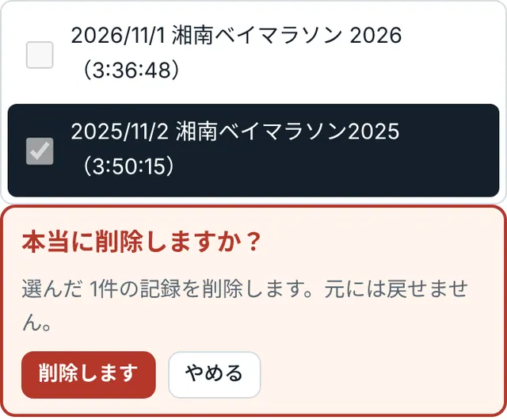
削除した記録は元に戻せません。保存先がDropboxのときは、Dropboxからも削除します（ネットにつながってサインインしているときだけ選べます）。
一覧で大会を選ぶと、その下の「比べる記録」に、同じ大会の前回の記録が自動で選ばれます（大会名が同じ記録、または位置があればスタート地点と距離が同じ記録を「同じ大会」とみなします）。ほかの記録を選んだり、「比べない」にしたりもできます。比べると、次のように表示が変わります。
比べる記録がDropboxにある「☁」の記録でも、選べば読み込んで比べます。以前の版の記録は位置と天気がないため、地図と天気以外で比べます。
大会の公式記録（記録証やリザルト）が出たら、「4. 実績」の一覧でその大会を選び、「公式記録」の枠の「公式記録を入力」を押します。入力用の画面に切り替わります。
「4. 実績」の上の「📊 ダッシュボード」を押すと、通算と今季（7月〜翌年6月）の、フルとハーフの完走回数とベストタイム（大会名・日付つき）が出ます。出走回数とリタイアの回数も出ます。ベストタイムは、公式ネットタイムを入れた大会はその時間（「公式」と表示）、入れていない大会はアプリで測ったネットタイムです。
途中で終了してしまい、もう一度スタートしたため、同じ大会の記録が2つに分かれたときに使います。「出走した大会の一覧」の下の「分かれた記録を1つにまとめる」を押します（同じ日に本番の記録が2つあり、先の記録が完走になっていないときだけ表示されます）。
Dropbox（ドロップボックス）は、ファイルをインターネット上に預けておけるサービスです。保存先をDropboxにすると、ゴールしたあと本番の記録を自動でDropboxに保存します。スマホには直近5件しか残さないので容量を使わず、スマホを変えても記録はなくならず、パソコンでも同じ記録を見られます。無料のプラン（Dropbox Basic）で十分足ります（1回の記録は大きくても数十KBです）。
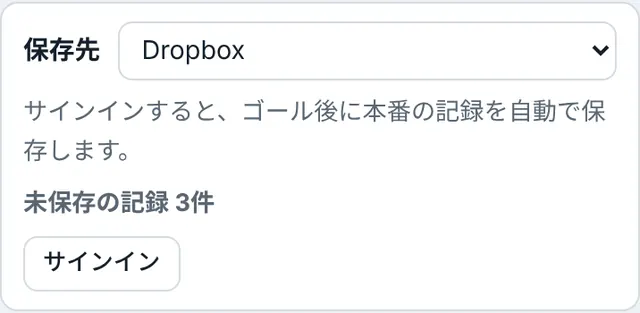
スマホで保存した記録は、パソコンのマラソンBGMでも見られます。やり方は、次の「スマホの記録をパソコンで見る（Dropboxで連携）」を見てください。
保存先をDropboxにすると、スマホで走った記録を、パソコンのマラソンBGMでそのまま見られます。パソコンへのコピーやファイルの受け渡しは要りません。大きな画面で、ペースのグラフ・高低差・地図・前回との比較をじっくり見られます。
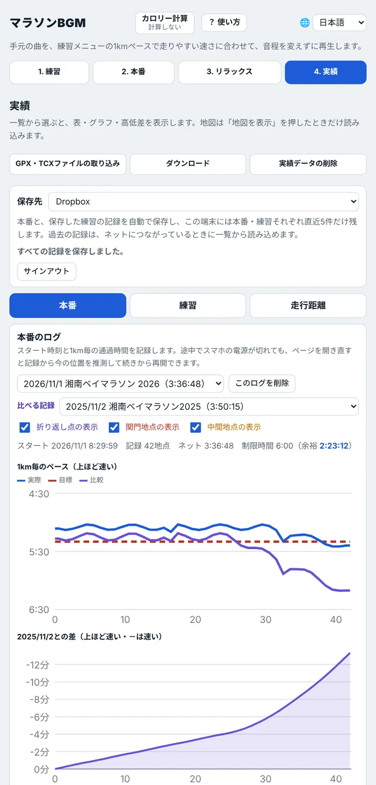
| パソコンでも見られるもの | スマホの中だけのもの |
|---|---|
| 本番と練習の記録（ペースのグラフ、前半・後半、高低差、1 km毎の表、関門・折り返し、天気、地図、前回との比較）、走行距離の記録と月ごとのグラフ・消費カロリー | 曲、練習メニュー、本番レース情報・戦略、自動生成の設定、音・合図の設定 |
パソコンで記録を削除すると、Dropboxからも消えるため、スマホでも見られなくなります。
| こんなとき | どうするか |
|---|---|
| 走っている途中でスマホの電源が切れた・画面が消えた・アプリが閉じた | マラソンBGMを開き直すだけで、続きから自動で再開します。「🔊 画面のどこかに一度ふれてください」と出たら、一度ふれます（下の「画面が消えた・アプリが閉じたとき」） |
| 1 km毎の音声のお知らせが出ない | 画面に「🔊 画面のどこかに一度ふれてください」が出ていないか確かめ、出ていればふれます。「音・合図」タブの「1km毎にお知らせ（音声と画面）」にチェックがあるかも確かめます |
| 天気・場所名が出ない、Dropboxに保存されない | 機内モードをOFFにしてネットにつなぎ、このアプリを開きます |
| Bluetoothイヤホンが切れて音楽が止まった | つながったらオレンジ色の「▶ 音楽を再開」を押します。タイマーは止まっていません |
| 曲が流れない | 「曲」タブで「使う」にチェックがあるか、「流す音」が「曲を流す」か、スマホの音量を確かめます |
| GPSが使えない | https://shinichiokabe.github.io/marathon-bgm/ で開いているか、Chromeの位置情報が「許可」かを確かめます |
| 「スタート」が押せない（本番） | スタート時刻の1秒前までは押せません |
| マイリストを読み込んでも大会名が変わらない | マイリストは曲だけです。大会は「本番レース情報・戦略を保存」の「読み込む」を押します |
| 「上書き」が押せない | 上書きできるのは黄色の行（読み込み中）だけです。先にその行の「読み込む」を押します |
| 日本語がおかしい | ブラウザの自動翻訳を「元の表示」に戻します |
| 直したはずのところが古いまま | ページの一番下の「版」を確かめ、古ければChromeのタブを閉じて開き直します |
| 「このファイルは読み込めません」と出る（CSV） | 「4. 練習で走る」の「CSVの形式」と合っているか、とくに1行目が「marathon-bgm-bulk」で始まっているかを確かめます。Excelなどで開いて保存し直すと、形式が変わって読めなくなることがあります |
待機中と走っている間は、画面をつけたままにしておくと確実です。ほかのアプリに切り替えると、音楽や音声が止まることがあります。
走っている間と本番待機中は、画面が消えないようにしています（スマホの省電力モードなどで画面ONの許可が外れても、すぐに取り直します）。それでも画面が消えるときは、スマホの「画面消灯（スリープ）」の時間を長くし、省電力モードをOFFにしてください。ネットにつながっていなくても、一度開いたことがあれば、スマホに保存した控えですぐに開きます。
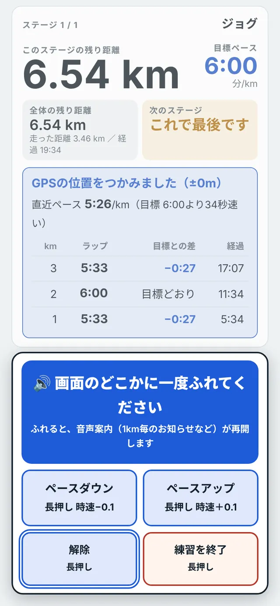
マラソンBGMは無料で使えます。寄付は任意で、寄付をしなくてもすべての機能を使えます。応援していただける場合は、画面の一番下の「☕ このアプリを応援する（PayPal）」から寄付できます。
寄付先：https://paypal.me/marathonBGM
寄付にはPayPalのアカウントが必要です。日本円での個人間の送金に手数料はかかりません。
ご意見・ご要望：marathonbgm@mbr.nifty.com 可能な範囲内で機能改善に取り組んでいます。メールの返信は原則行っていません。
Marathon BGM plays the music on your phone at a speed that matches your running pace. The pitch does not change, and no sign-up or payment is needed. This guide follows the order "Setup → Training → Race → Relax", so start wherever you like.
There are three modes. Switch between them with the buttons at the top of the screen. The "4. Results" button to their right shows your past race logs (see "8. Log, graphs and results"). With Dropbox as "Save to", you can also view the runs from your phone on a computer (see "View your phone's logs on a computer" in "8.").
| Mode | When to use | Song speed |
|---|---|---|
| 1. Training | Everyday training | Matches the pace of your training menu |
| 2. Race | Marathon race day | Matches the pace of your target time (strategy) |
| 3. Relax | When you are not running | Original speed |
| 4. Results | When you look back at past races | No music |
You can save three kinds of things, each separately. Loading one does not change the other two.
| What | Where to save | Modes | Look for |
|---|---|---|---|
| Songs (which songs, in what order) | "🎵 Song lists (my lists)" | Training, Race, Relax | Purple box |
| Training menu | "Save practice menu" | Training only | Below the "Menu" tab |
| Race info and strategy | "Save race info & strategy" | Race only | Below the "Race" tab |
For all three, the item that is currently loaded is shown as a yellow row marked "Loaded". You can press "Overwrite" only on that yellow row (to overwrite another one, "Load" it first). When you press "Overwrite", a confirmation shows what will change ("before → after"). Press "OK" to go ahead or "Cancel" to stop. Your songs and settings stay only on your phone and are not sent anywhere.
Press "Calories" at the top right, enter your body weight (kg) and press "Close". The label under the button changes to "On". When a training session ends and when you finish a race, the app shows "Calories burned (est.) about ○○ kcal" and also writes it to the race log and CSV. It is not shown while you are running. The estimate is "weight × distance run". Clear the weight to turn it "Off" again. Your weight is shown only on the "Calories" screen.
| Songs you can use | Songs you cannot use |
|---|---|
| Music you have as files, such as MP3, M4A (AAC), FLAC or WAV, and songs ripped from CDs | Songs "downloaded" in apps such as Apple Music, Spotify or Amazon Music, and copy-protected songs (.m4p etc.) |
Even without songs, you can use the app by choosing "Drum" or "Silent" under "Sound to play" at the top of the "Songs" tab.
For outdoor training and races, preparing in this order keeps the music, voice notices and GPS log from dropping out.
| Works in airplane mode | Needs the internet |
|---|---|
| Songs and drums, voice notices (every 1 km etc.), GPS distance, laps and elevation, screen lock, calories | Weather, training place name, saving to Dropbox, the map, checking for a new version |
Before a race, do one training run with airplane mode on to check that GPS, music and the every-1-km notices work on your phone.
You can reopen it in airplane mode: once you open Marathon BGM while online, the app and the guide images are saved on the phone. After that, even if the browser tab is closed or the phone shuts the browser down while in airplane mode, you can reopen it from the icon. If you were running, it resumes where you left off. When online, it checks for a new version each time it opens.
Check whether you are online: "Online" or "No internet (offline)" near the top of the screen shows the current state. Press it to see which features work without the internet and which need it. While offline, the map, weather, place name and saving to Dropbox show "Not available now (no internet)". Saving and weather happen automatically once you are online, so you do not need to do anything.
From top to bottom: the mode buttons, the running display (timer and Start), and the settings tabs. Use "🌐" at the top right to switch between Japanese, English, Chinese and Korean.
Kilometer and mile versions: there is also "Marathon BGM (Mile)", which works in miles (https://shinichiokabe.github.io/marathon-bgm-mile/). Press "Mile version" at the top of the screen to go to the mile version; in the mile version, "Kilometer version" takes you back. Songs, my lists and weight are shared; logs and race settings are kept separately. You cannot switch while running.
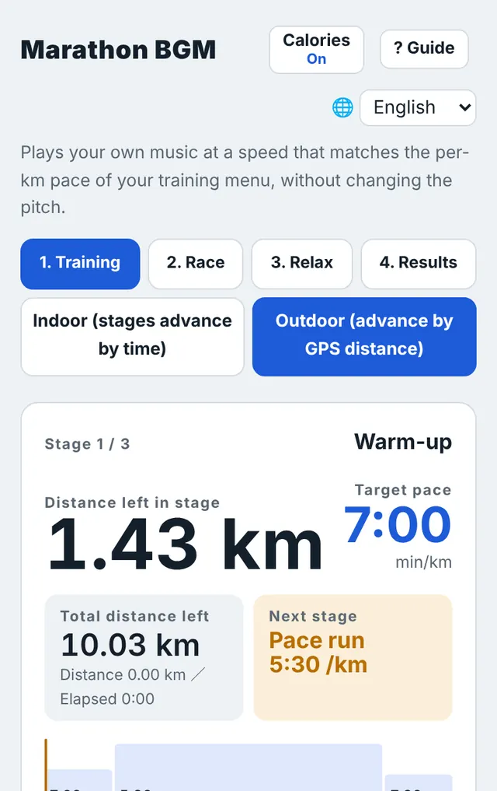
| Mode | Settings tabs |
|---|---|
| Training | Menu / Songs / Sound & cues |
| Race | Race / Strategy & log / Songs / Sound & cues |
| Relax | No tabs (relax settings and songs on one screen; no Drum, Silent or Sound & cues) |
Screen lock: when you start, the screen locks automatically so buttons are not pressed by accident in your pocket. The buttons you can use (Pace up / Pace down, Confirm distance / Undo, Finish, Unlock) are in the bar at the bottom and work with a long press. While you hold, the button fills with color from the left; when it is full, the action runs.
Lock during indoor training: indoors you usually put the phone on the machine, so the locked screen has only three buttons, "Pace down", "Pace up" and "Pause / End", and each works with a single tap. "Pause / End" stops the timer and the music and shows a large "Resume" button at the bottom and "End" at the top. If a towel touches it, training is only paused; press "Resume" to continue. To stop training, press "End" at the top. When you finish the whole menu, the lock is released automatically.
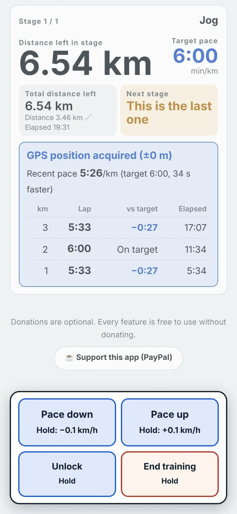
At the very bottom of the page you will see a version label such as "版 2026-11-10o" (版 means version). Check it to see whether you have the new version. When a new version is available, "A new version is available" appears at the top of the screen; press "Update now".
When you end training or finish a race, the screen stays as it is and a "Well done!" box shows how saving is going.
If you are offline, "📶 You are offline" appears. Turn airplane mode off and turn on Wi‑Fi or mobile data. When everything is done, "Close" appears; press it to finish. If you cannot go online there, you can finish with "Close now (save automatically later)". The log is not lost; open the app later while online and it is fetched and saved automatically.
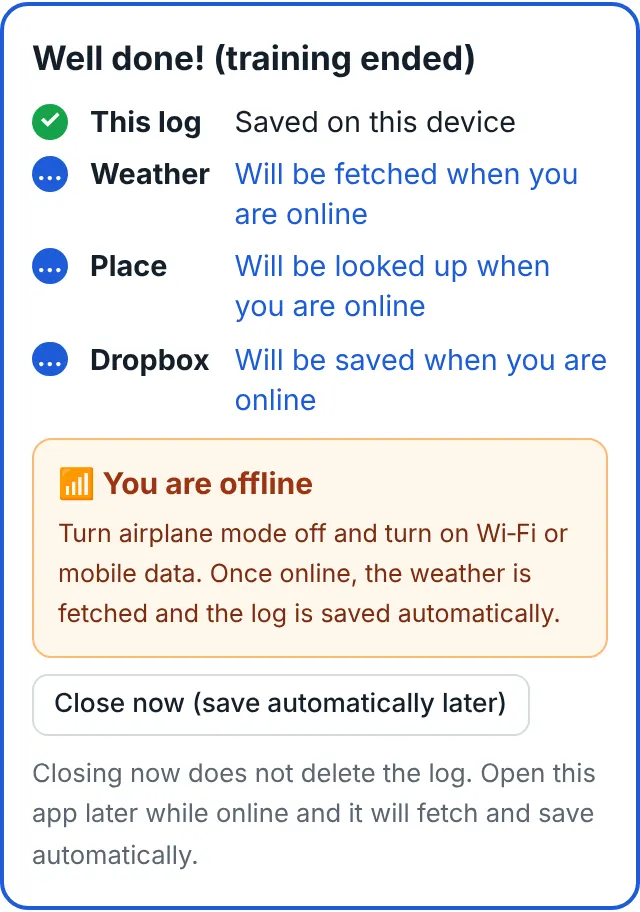
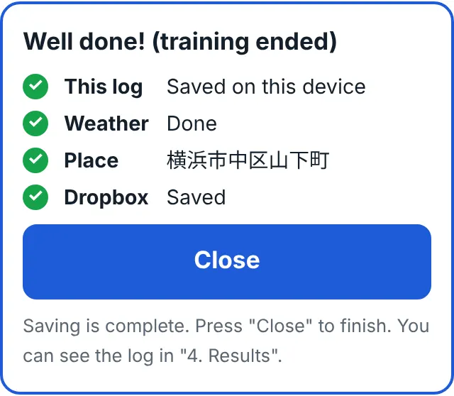
In a race, the same "Finish" button is used whether you finished or stopped partway, so choose "I finished" or "I stopped (DNF)" at the top of the "Well done!" box. If the estimated distance is within 1 km of the finish, "I finished" is highlighted; otherwise "I stopped" is. "Close" appears only after you choose, and you can change your choice until you press "Close".
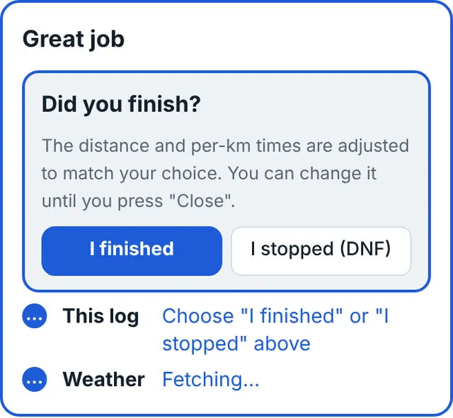
For each stage of your training menu, songs play at a tempo that makes that pace easy to run.
Run without a time limit: in "Training menu", check "Run without a time limit (until you press "End", up to 4 hours)" and enter a pace (min per km). Digits are enough (e.g. 630 → 6:30). The tempo stays at that pace. While you run, the elapsed time and distance are shown (indoors estimated from time and pace, outdoors by GPS), and every 10 minutes you hear e.g. "10 minutes. About 1.4 km." To stop, press "End" (indoors "Pause / End" → "End"; outdoors long-press "End training"). Training ends automatically after 4 hours; to run longer, start again.
| Indoor | Outdoor (GPS) | |
|---|---|---|
| When the stage advances | When the set time has passed | When you have run the set distance |
| Every-1-km notices and lap table | No | Yes |
Outdoors, start after the message saying the GPS position has been found. "Pace up / Pace down" while running changes the speed by 0.1 km/h at a time and adjusts the tempo. "Clear training" empties only the menu (press twice).
Stopping partway (Pause and End training): "Pause" only stops the timer; press it again to continue. To end training early, press "End training" and press it again when "Press again to end" appears. While the screen is locked, long-press "End training" in the bottom bar (outdoor), or press "Pause / End" and then "End" at the top (indoor). The calories are calculated for the distance run so far, and outdoors you are asked "Save this training run?". Then, when saving is done in the "Well done!" box, press "Close" to finish.
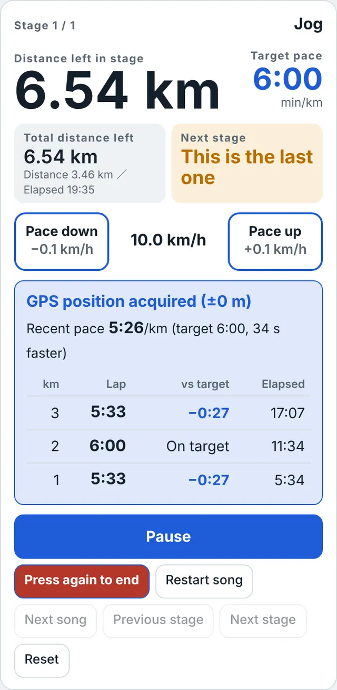
Song order and shuffle: Training has no "Shuffle songs". In Training you can choose which stages each song plays in ("All stages" or particular stages), and when the stage changes, the songs for that stage play in the order you arranged with ▲▼ on the "Songs" tab. To change the order, rearrange the songs with ▲▼. Shuffle is available in Race (on the "Songs" tab, below "Add songs") and in Relax.
Press "Auto plan" on the "Menu" tab to make today's menu toward your target race.
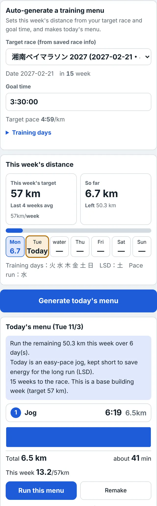
The weekly target starts from your average of the last 4 weeks in "Distance" and grows by up to 10% a week. Every 4th week is a lighter recovery week, and the 3 weeks before the race taper off. The peak week depends on your goal time. Today's distance is the rest of this week's target split over the remaining running days (more on the LSD day, a little more on the pace run day). Jog and LSD are about 1:10 to 1:20 per km slower than goal pace; the pace run is at goal pace (+10 s while building up distance).
If you run on a rest day: "Training days" only sets the days the generator makes a menu for. A run on a rest day still counts toward this week's distance, and the day shows the distance you ran. The rest of the week's target goes down by that amount, so the menus for the remaining running days get lighter. A rest day with no run shows "Rest".
Generated menus are a general guide. Adjust the stage distances and paces to how you and your legs feel.
When an "Outdoor (GPS distance)" training run ends, you are asked "Save this training run?". This happens both when you finish the whole menu and when you end early with "End training" (or "Reset") (not under 200 m).
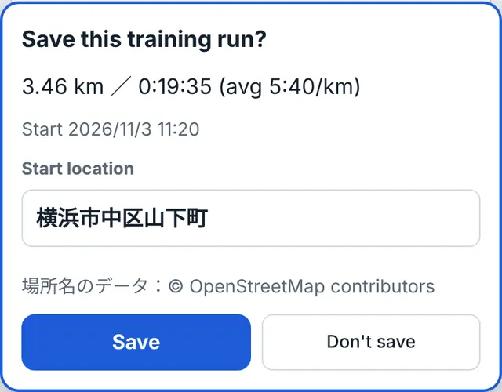
Training logs show the same laps per km, pace graph, elevation, weather and map ("Show map") as race logs, and can be compared with earlier runs from the same place. Indoor training does not measure distance, so it is not logged.
If you have a CSV file written in the "CSV format" below, the day's training menu can be shown automatically. It is on the "Menu" tab, under "+ Add stage": "Load practice menu from CSV".
The list shows today and later days. Rest days without running are marked as having no running. A CSV you have loaded stays on your phone, so next day you only need to choose the date. You cannot load while running.
| Column | What to write | Example |
|---|---|---|
| 1 | menu | menu |
| 2 | Date (year-month-day) | 2026-11-03 |
| 3 | Text shown in the list | Pace run |
| 4–7 | Not used (can be empty) | |
| 8 | Training menu code. Empty means "no running" | tm.W420x100_P330x400_C450x100 |
A training menu code is "tm." followed by stages joined with "_". Each stage is written as "type letter", "pace", "x", "time".
| Letter | Type |
|---|---|
| W | Warm-up |
| J | Jog |
| P | Pace run |
| M | Target pace |
| I | Interval |
| R | Recovery jog |
| B | Build-up |
| L | Long run |
| C | Cool-down |
The example "tm.W420x100_P330x400_C450x100" means "Warm-up 10 min at 7:00/km → Pace run 40 min at 5:30/km → Cool-down 10 min at 7:30/km". A whole file looks like this:
marathon-bgm-bulk,v1
type,date,text,,,,,code
menu,2026-11-03,Pace run,,,,,tm.W420x100_P330x400_C450x100
menu,2026-11-04,Rest,,,,,
menu,2026-11-05,Jog,,,,,tm.J450x600On race day you only press three buttons: standby → start → finish. Before that, enter the race information.
| Item | What to enter | Example |
|---|---|---|
| Race name / event | Full / Half / Other (enter the distance) | Mito Komon Marathon, Full |
| Date / start time | Time of the starting gun | 2026/11/1, 9:00 |
| Wave delay | Minutes from the start of the first wave until the wave of your block starts (0 if the race has no waves) | 10 |
| Time limit | h:mm. For wave starts, add "the time between the first and the last wave start" to the race's time limit | 6:00 + 20 min → 6:20 |
| Target time | h:mm:ss | 4:30:00 |
| Cutoffs | One per line: "distance-km closing-time" | 10 10:40 |
| Aid stations | One per line: "distance-km contents" | 15 water banana |
| Turnarounds (optional) | One per line: "distance-km name". The time you pass each one is logged | 10.5 1st turnaround |
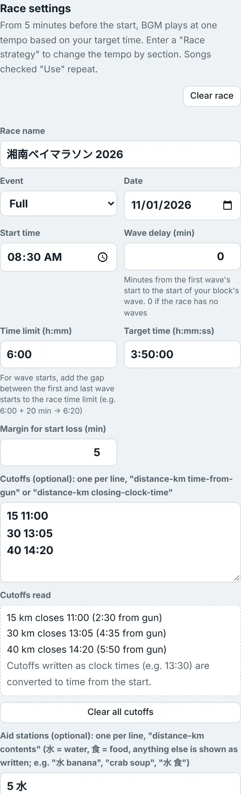
For aid station contents, "水" means water, "食" means food, and anything else is shown as written. Check below the input box that it was read correctly. To switch to another race, press "Load" in "Save race info & strategy".
For target times, time limits, paces and official times, just type the digits; the colons are added automatically, so the phone's number pad is enough.
| Field | Type | Becomes |
|---|---|---|
| Target / official times (h:mm:ss) | 40110 33000 5000 | 4:01:10 3:30:00 0:50:00 (4 digits = mm:ss) |
| Time limit (h:mm) | 600 1330 | 6:00 13:30 |
| Pace (m:ss) | 530 | 5:30 |
| Checkpoints (one per line) | 10 140 30 1330 | 10 km, 1:40 after the gun 30 km closes at 13:30 |
The race date and start time are picked from the phone's calendar and clock.
Tap "🎒 Packing checklist" at the top to open a screen for checking your race-day items (it cannot be opened while waiting for or running a race).
"← Back" returns to the previous screen. An item that appears under two conditions is listed only once. The item names are in Japanese; you can rename them with "Customize".
| Display | Meaning |
|---|---|
| Since start | Time since you pressed Start |
| Until time limit | Time left in the time limit, counted from the gun |
| Estimated position | Your current distance, calculated from GPS, "Confirm distance" and the target pace |
| Next cutoff / Next aid station | Distance to it, time until closing, or what is there |
| Target distance in 30 min | Where you should be in 30 minutes if you follow the strategy |
Net time and gross time: the big timer while running is the time since you pressed "Start" (net time). When you finish, gross time is shown as well. Gross time is the time from "start time + wave delay" (the start of your wave) to the finish; net time is the time from when you crossed the start line to the finish. In a race, the clock does not stop even if you pause the music while running. Gross time is also kept in the log and CSV.
Confirm distance: while running, the buttons "< 10km Confirm > Undo" appear. The middle button shows only the current estimated distance. Confirming snaps to the furthest marker not beyond the estimate (10 km for an estimate of 10.15 km; markers are every 1 km, and the halfway point and markers less than 1 km from the finish are not used). When you use the arrows, the button shows the chosen marker (e.g. "11km confirm") and the voice reads it out.
How you know it was confirmed: when you press Confirm, the voice says "21 kilometers confirmed" and the whole screen flashes green with "21 km Confirmed". Undo flashes orange with "Confirmation cancelled". When you change the marker with the arrows, the voice reads out the chosen distance.
Confirm by double-tapping: while the screen is locked, double-tap anywhere except the bottom buttons and the app reads out e.g. "Estimated 16.1 km. You can confirm at the 16 km marker". Double-tap again and it asks "Confirm at 16 km?"; double-tap once more to confirm (the time recorded is when you first tapped). If you don't tap for 15 seconds, it stops. No speech recognition is used, so it works without an internet connection. If the marker is wrong, choose it with the arrows on the bottom bar first, then double-tap.
Finish by double-tapping: markers are every 1 km; the halfway point and markers less than 1 km from the finish are not used. When the estimate is less than 1 km from the finish, or after you have confirmed the last marker (the furthest one at least 1 km before the finish), a double-tap reads out "You can finish here". Double-tap again for "Finish now?" and once more to finish. The finish time recorded is when you first tapped, so double-tap right after crossing the finish line.
Your position never goes back: the estimated position never drops below the distance you have already covered by GPS etc. (it changes only when you confirm a marker yourself). This also holds after you reopen the app.
If you press Finish by mistake: on the finish screen, press "Cancel the finish and keep running" to go back to the state before you finished and carry on (within 20 minutes; the clock has kept running).
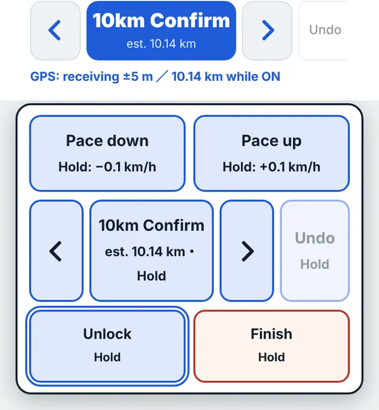
Confirming at distance markers corrects your position. Correcting here also makes the per-km times more accurate after you finish (see "Adjusting distance and time" in "8. Log, graphs and results"). From 5 km on, every 1 km the app checks over the last 5 km whether you are 10 or more minutes behind target; if so, the strategy is adjusted automatically to your pace over the last 5 km (or to a speed that lets you finish if you might exceed the time limit). After an adjustment, it re-adjusts only when the speed changes by 0.3 km/h or more, or when switching to finish-first.
Plays the songs checked "Use" at their original speed, repeating until you press "Stop". Use it for stretching or cooling down.
Under "Sound to play" at the top of the "Songs" tab, choose Songs, Drum or Silent. Drum and Silent do not use songs, so the song list ("Add songs"), the purple box "🎵 Song lists (my lists)" and the "Restart song" / "Next song" buttons are not shown. Beeps, volume and fine-tuning of the rhythm (press "Faster" if the songs feel slow) are on the "Sound & cues" tab.
| Sound to play | What you hear |
|---|---|
| Songs | The songs checked "Use", at a speed matched to your pace |
| Drum | Instead of songs, a drum at the step rate for your pace (e.g. 171 steps/min) |
| Silent | No music; only beeps and voice notices |
While a voice notice is being read out, the volume of songs and drums is lowered a lot automatically and restored when it ends. Adjust "Voice guidance volume" on the "Sound & cues" tab in 5 steps (the middle, "Standard", is the volume used so far). The voice cannot be louder than the phone's media volume, so "Slightly loud" and "Loud" lower the music further during guidance ("Loud" stops it) and read a little more slowly. Press "Test" to check. If it is still quiet, turn up the phone volume. When notices overlap, the per-km lap notice is read first, and the halfway, every-30-minute, aid-station and turnaround-ahead notices are read after it. In a race, the app tells you things by voice at the times below. You can turn off the every-1-km notice on the "Sound & cues" tab. Check "Vibrate every 1 km" to get one short vibration every 1 km (Race and outdoor Training; Android only, not supported on iPhone). The lap shown on screen every 1 km also shows a finish prediction (net time and clock time at the finish) if you keep the pace of the last 1 km. If the prediction misses the time limit, that is shown too.
| When | Example of what is said |
|---|---|
| 5 minutes before the start / at the start time | "5 minutes to the start" / "It is your start time" |
| Every 1 km | "17 kilometers. Lap 6 minutes 12 seconds." (also shown large on screen) |
| Every 30 minutes | "60 minutes elapsed. The strategy puts you at 9.8 km." |
| 300 m before an aid station | "Aid station soon. Water and bananas." |
| When the strategy is adjusted automatically | "Adjusted to your pace over the last 5 kilometers…" |
In a race, the start time and the time at every 1 km are recorded automatically. The time you pass halfway (half the race distance) and each turnaround entered on the "Race" tab is recorded too. Find them under "4. Results" at the top of the screen (you can also open it with "Open 4. Results" on the "Race" → "Strategy & log" tab).
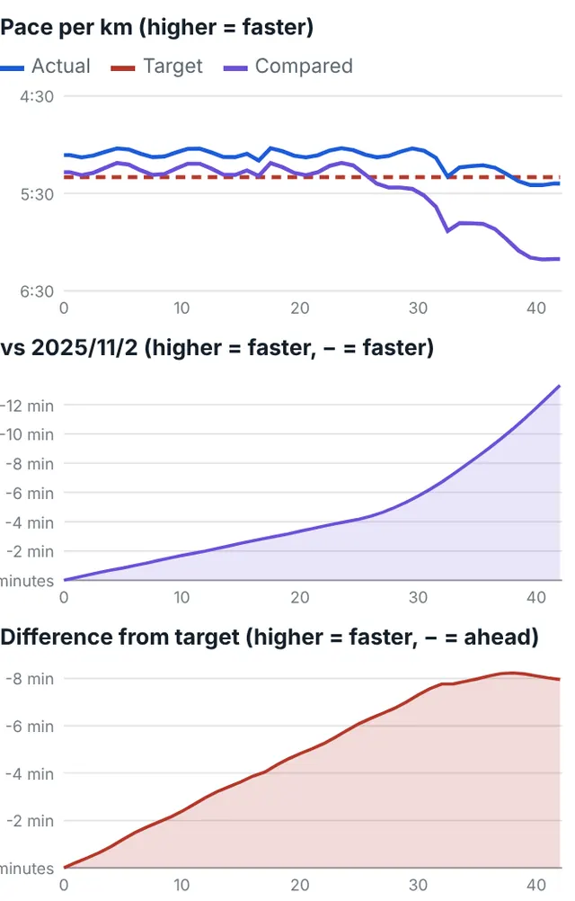
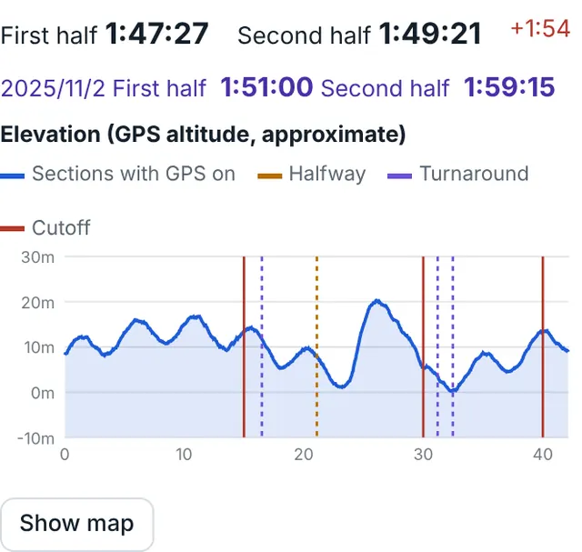
Weather is fetched automatically from weather data (Open-Meteo) after the finish, when the app is open and online. If GPS was never turned on before or during the race, the location is unknown and weather cannot be fetched.
Only when you enter turnaround distances on the "Race" tab, a voice notice says "1 kilometer to the 1st turnaround" and "500 meters to …" 1 km and 500 m before each one. Turnaround distances in race guides are often inaccurate, so they are used only for these notices and never to correct the estimated position or per-km times (corrections come from "Confirm distance" and the finish).
A turnaround is recorded at the time you reach the distance entered on the "Race" tab. Detours to toilets or aid stations count toward the distance you ran, so a turnaround can be recorded before the real one. A wrongly entered distance also records the wrong point.
After the finish, the GPS record of the sections where GPS was on is checked for points where your direction reversed (turnarounds), shown as follows.
| Shown as | Meaning | Delete |
|---|---|---|
| Turnaround name + "GPS confirmed" | A registered turnaround that GPS also detected nearby (within 0.5 km) | Not possible |
| Turnaround name only | A registered turnaround that GPS could not confirm (GPS was off, wrong distance entered, etc.) | Possible |
| Turnaround (GPS) | Not registered, but GPS detected a turnaround (a trip to a toilet or aid station, turning back after a wrong turn, etc.) | Possible |
Remove any row that is not a real turnaround: press "Delete" in the table, then press it again when it says "Press again to delete".
The distance to the next cutoff, required pace and margin are calculated with the distance corrected by the GPS error ratio learned from "Confirm distance" (see "Adjusting distance and time"). When you pass the final cutoff, a voice notice tells you "Final cutoff passed. ○ minutes to the time limit. ○ km to the finish; you will make it if you are faster than ○ per km." If you enter cutoffs on the "Race" tab, the time you pass each one is recorded, and its row shows when it "Closes" and your "Margin" (how long before closing you passed). Under 10 minutes is shown in yellow, passing after closing in red. The top line also shows the time limit and your margin at the finish. Closing times are calculated from the race date and start (gun) time, so enter both; without them, they are estimated from when you pressed Start. When comparing with an earlier race, its cutoff margin appears in the "Compared lap" column.
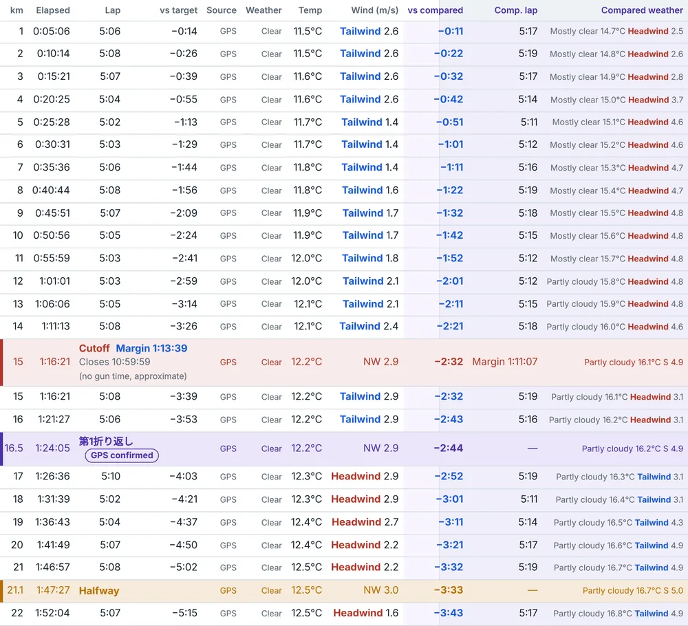
The distance measured by GPS differs from the real course distance. It is often longer, because you cannot always run the shortest line and because buildings and trees make the signal wander, and it can be shorter when the signal drops in tunnels or between tall buildings. In a full marathon the difference can be several hundred meters to about 1 km. In a race the app therefore adjusts as follows.
The more often you correct with "Confirm distance", the closer the per-km laps are to reality. You do not need to press it at every marker; doing it now and then, such as every 5 km, already helps.
Only the points whose boxes are checked, "Show turnarounds", "Show cutoffs" and "Show halfway", appear in the table, elevation and map. Unchecking hides them without deleting them, and the CSV always includes all of them. Training logs have no cutoffs or halfway point, so only "Show turnarounds" appears while "Training" is shown (on out-and-back routes, turnarounds found by GPS are shown).
Press "4. Results" at the top of the screen. Everything else is hidden and only your past logs are shown. Use "Race" and "Training" at the top to switch between kinds of logs. Choose a race from the list to see the same graphs, halves, elevation and table as above. The map is not shown at first; it appears only when you press "Show map". Press "1. Training", "2. Race" or "3. Relax" to go back. "4. Results" cannot be pressed while a race is armed or running.
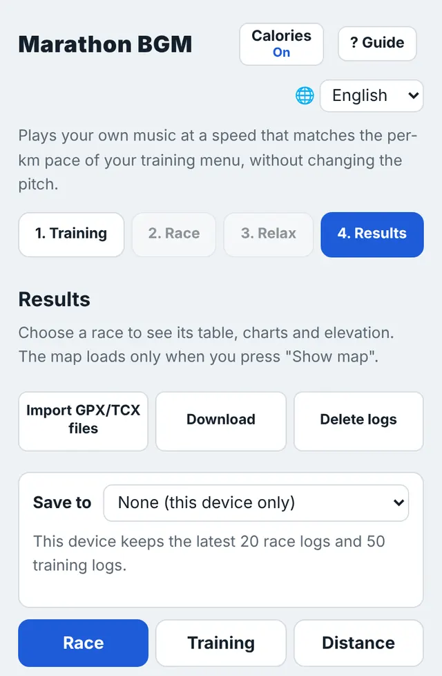
When "Race" is selected, "Races entered" appears at the top. Each row shows the date, race name, photo URL, event (Full, Half or Other with the distance), status (Finished or DNF), net time and average pace per km. Press a row to show that race in the race log below. Races kept only in Dropbox are marked "☁" and load when you press them.
The photo URL is a place to keep the link to your race photos, such as a race photo service or a Google Photos shared link. After choosing a race, a "Photo URL" box appears in the race log: paste the URL and press "Save". "Open" in the list opens that page.
"Save to", just below the three buttons at the top of "4. Results", decides where your logs are kept.
| Save to | Logs kept on this phone | Best for |
|---|---|---|
| None (this device only) | The latest 20 race logs and 50 training logs. Beyond that, the oldest are deleted | People who only look at logs on this phone |
| Dropbox | The latest 5 of each kind. Every log is kept in Dropbox | People who want to keep all logs, or view them on a computer |
With "None", your logs are lost if you change phones or clear the browser's data. Download the CSV for important races, or save them to Dropbox as described below.
Press "Download" at the top of "4. Results" to open it, choose a log and press "Download CSV" (per-km table) or "Download GPX" (route). Race and training logs can be chosen, including "☁" logs that are only in Dropbox. A GPX file can be uploaded to Strava or Garmin Connect or viewed in other map apps. It contains the route, elevation and the time at each point (positions about every 25 m). Logs without positions, such as a race run with GPS off, cannot be exported.
Runs recorded with Strava, Garmin Connect and so on can be imported into "4. Results" once exported as files (GPX/TCX). Past races run with a watch can then be viewed with graphs, elevation, map, weather and comparison, just like logs recorded with Marathon BGM.
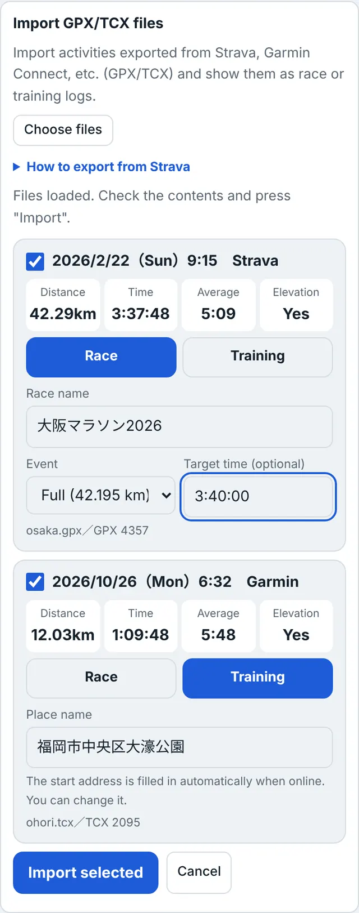
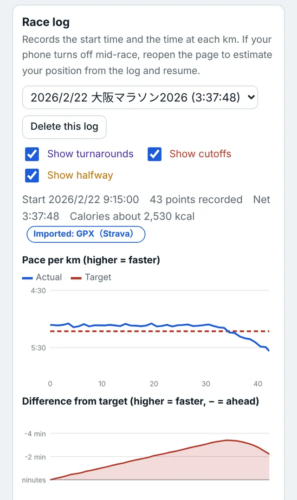
"Distance" in "4. Results" shows each run's distance and monthly totals.
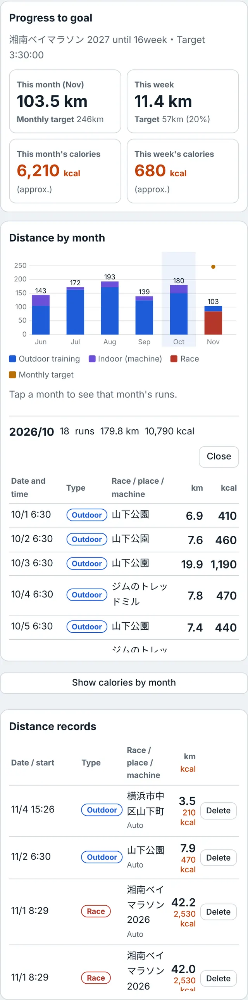
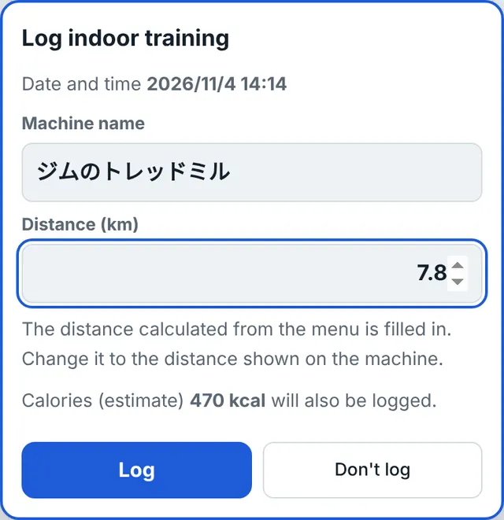
With Dropbox chosen, distance records are saved to Dropbox too, so your phone and computer show the same records.
Press "Delete logs" at the top of "4. Results" to open it and delete several logs of the kind shown (race or training) at once.
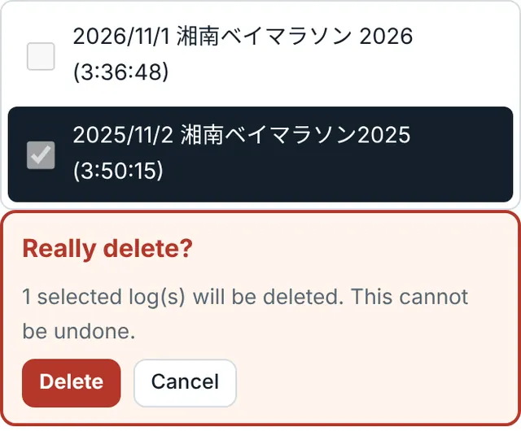
Deleted logs cannot be restored. With Dropbox chosen, they are deleted from Dropbox too (they can be chosen only when you are online and signed in).
When you choose a race in the list, "Compare with" below it automatically picks your previous log of the same race (a log with the same race name, or, when positions are available, the same start point and distance, counts as the same race). You can choose another log or "No comparison" instead. When comparing:
A "☁" log stored in Dropbox is loaded when you choose it. Logs from earlier versions have no positions or weather, so they are compared on everything except the map and weather.
When the official result (certificate or results list) is out, choose the race in the list in "4. Results" and press "Enter official result" in the "Official result" box. A separate input screen opens.
Press "📊 Dashboard" at the top of "4. Results" to see, for all time and this season (July to June), the number of finishes and the best time (with race and date) for full and half marathons, plus the number of races and DNFs. Best times use the official net time where entered (marked "Official"), otherwise the net time measured by the app.
Use this when one race was split into two records because you ended it part-way and started again. Press "Merge a split record" under the race list (it appears only when there are two race records on the same day and the first one is not a finish).
Dropbox is a service that keeps your files on the internet. With Dropbox chosen, race logs are saved to Dropbox automatically after the finish. Only the latest 5 stay on your phone, so they take little space, they survive a change of phone, and you can see the same logs on a computer. The free plan (Dropbox Basic) is plenty (one log is a few tens of KB at most).
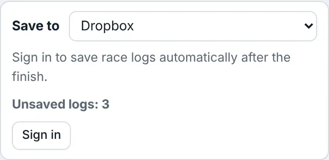
Logs saved from your phone can also be viewed in Marathon BGM on a computer. See the next section, "View your phone's logs on a computer (linked through Dropbox)".
When "Save to" is Dropbox, the runs you record on your phone can be viewed as they are in Marathon BGM on a computer. No copying or file transfer is needed. You can look at the pace graphs, elevation, map and comparison with earlier races on a big screen.
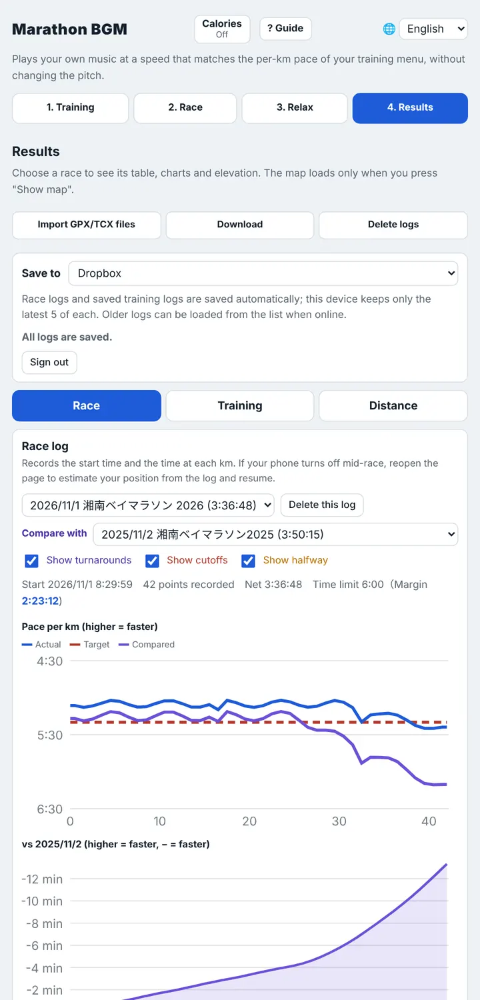
| Also visible on the computer | Only on the phone |
|---|---|
| Race and training logs (pace graphs, first/second half, elevation, per-km table, cutoffs and turnarounds, weather, map, comparison), distance records with monthly graphs and calories | Songs, training menus, race info and strategy, auto plan settings, sound and cue settings |
If you delete a log on the computer, it is also deleted from Dropbox, so it disappears from the phone too.
| Problem | What to do |
|---|---|
| My phone turned off, the screen went off or the app closed while running | Just open Marathon BGM again; it resumes automatically. If "🔊 Touch the screen once" appears, tap once (see "If the screen went off or the app closed" below) |
| No voice notice every 1 km | Check whether "🔊 Touch the screen once" is shown and tap if so. Also check that "Announce every 1 km (voice and screen)" is checked on the "Sound & cues" tab |
| No weather or place name; not saved to Dropbox | Turn airplane mode off, go online and open this app |
| My Bluetooth earphones disconnected and the music stopped | When they reconnect, press the orange "▶ Resume music". The timer has not stopped |
| Songs do not play | On the "Songs" tab, check that "Use" is checked, that "Sound to play" is "Songs", and the phone's volume |
| GPS does not work | Check that you opened https://shinichiokabe.github.io/marathon-bgm/ and that Chrome's location permission is "Allow" |
| I cannot press "Start" (race) | It cannot be pressed until 1 second before your start time |
| Loading a my list does not change the race name | My lists are songs only. For a race, press "Load" in "Save race info & strategy" |
| I cannot press "Overwrite" | Only the yellow row ("Loaded") can be overwritten. Press "Load" on that row first |
| The text looks wrong | Turn off the browser's automatic translation (show original) |
| A fix does not seem to be there | Check the version label ("版 …") at the bottom of the page. If it is old, close the Chrome tab and open it again |
| "This file cannot be loaded" (CSV) | Check that it matches the "CSV format" in "4. Training", especially that line 1 starts with "marathon-bgm-bulk". Opening and re-saving in Excel etc. can change the format so it can no longer be read |
During standby and while running, keeping the screen on is the safest. Switching to another app may stop the music and voice.
While you are running and during race standby, the app keeps the screen on (if the phone drops the keep-screen-on permission, e.g. in power-saving mode, the app takes it again right away). If the screen still turns off, make the phone's screen timeout (sleep) longer and turn off power saving. Even without an internet connection, the app opens at once from the copy saved on your phone, as long as you have opened it once before.
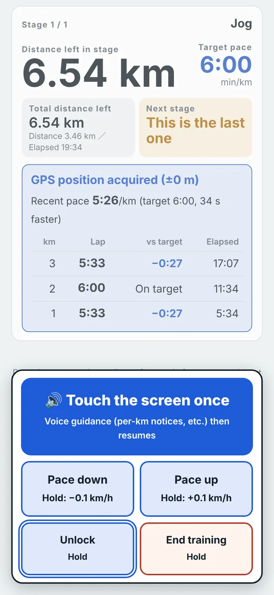
Marathon BGM is free. Donations are optional, and all features work without donating. If you would like to support it, use "☕ Support this app (PayPal)" at the bottom of the screen.
Donate: https://paypal.me/marathonBGM
A PayPal account is needed to donate.
Feedback and requests: marathonbgm@mbr.nifty.com — features are improved as far as possible. As a rule, emails are not answered.